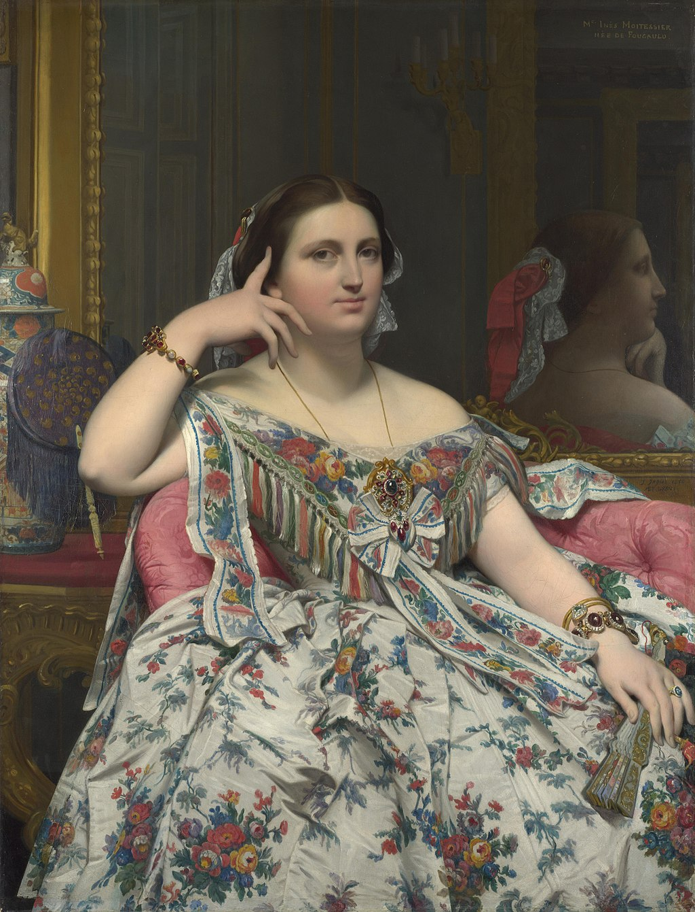

<head>
<meta charset="UTF-8" />
<meta name="keywords" content="drawing, painting" />
<meta name="description" content="drawings by Sunjy" />
<title>Sunjy</title>
<link rel="shortcut icon" type="image/x-icon" href="../../mImages/mCommon/favicon.ico" media="screen" />
<link rel="stylesheet" type="text/css" href="../../mCsses/mCommon/mCssA.css" />
<link rel="stylesheet" type="text/css" href="../../mCsses/mCommon/mCssB.css" />
<link rel="stylesheet" type="text/css" href="../../mCsses/mCommon/mCssC.css" />
<link rel="stylesheet" type="text/css" href="../../mCsses/mCommon/mCssD.css" />
<link rel="stylesheet" type="text/css" href="../../mCsses/mContent/mCssA.css" />
<link rel="stylesheet" type="text/css" href="../../mCsses/mContent/mCssB.css" />
<link rel="stylesheet" type="text/css" href="../../mCsses/mContent/mCssC.css" />
<link rel="stylesheet" type="text/css" href="../../mCsses/mContent/mCssD.css" />
</head>
<script type="text/javascript" src="../../mScripts/mContent/mContentAA.js" /></script>
<script type="text/javascript" src="../../mScripts/mContent/mContentAB.js" /></script>
<script type="text/javascript" src="../../mScripts/mContent/mContentAC.js" /></script>
<script type="text/javascript" src="../../mScripts/mContent/mContentAD.js" /></script>
<script type="text/javascript"></script> 
<script type="text/javascript">
document.write('<div class="mImgAbsolute"></div>');
/*
document.write('<p class="mFontSizeBColor" />From a white paper...</p>');
document.write('<table class="center"><tr><td>');
document.write('');
document.write('</td></tr></table>');
*/
</script>


<script type="text/javascript">
document.write('<p class="mFontSizeBColor" />Madame Moitessier</p>');
document.write('<p class="mFontSizeSColor" />By Jean-Auguste-Dominique Ingres, 1856.“Madame Moitessier” is a portrait of Marie-Clotilde-Inès Moitessier (née de Foucauld) begun in 1844 but not completed until twelve years later. Madame Moitessier (1821–1897) was the daughter of a French civil servant who married a wealthy banker and merchant, who was a widower twice her age.<br><br>In this painting, she is shown wearing abundant jewelry and dressed in an elegant silk dress with a floral pattern, which is echoed by the flowers and leaves of the gilt-framed mirrors. Madame Moitessier is framed on either side by mirrors, and her profile reflection can be seen in the mirror on the right.<br><br>Ingres, who in the 1840s was at the peak of his career, was initially reluctant to accept this portrait commission and refused her husband’s request for a portrait of his wife. However, when Ingres met Madame Moitessier, he was struck by her beauty and agreed to produce a portrait.<br><br>The painting took twelve years to complete due to many interruptions in the artist’s and subject’s lives. Work on this canvas was suspended when the death of Ingres’ wife left him unable to work for many months. Then Madame Moitessier was unavailable due to pregnancy and subsequently the death of her father. So over seven years later, Ingres began again, painting a different portrait of the subject showing her standing in a dark dress.<br><br>The standing picture of Madame Moitessier is in the National Gallery of Art, Washington, DC and shows Madame Moitessier looking much more solemn. Ingres then returned to his first composition this seated portrait, which he completed in 1856. This seated portrait shows a smiling Madame Moitessier, compared to the standing portrait in the black dress is a much soberer portrait.</p>');
document.write('<table class="center" /><tr><td>');
document.write('<br>In this painting, she is shown wearing abundant jewelry and dressed in an elegant silk dress with a floral pattern, which is echoed by the flowers and leaves of the gilt-framed mirrors. Madame Moitessier is framed on either side by mirrors, and her profile reflection can be seen in the mirror on the right.<br><br>Ingres, who in the 1840s was at the peak of his career, was initially reluctant to accept this portrait commission and refused her husband’s request for a portrait of his wife. However, when Ingres met Madame Moitessier, he was struck by her beauty and agreed to produce a portrait.<br><br>The painting took twelve years to complete due to many interruptions in the artist’s and subject’s lives. Work on this canvas was suspended when the death of Ingres’ wife left him unable to work for many months. Then Madame Moitessier was unavailable due to pregnancy and subsequently the death of her father. So over seven years later, Ingres began again, painting a different portrait of the subject showing her standing in a dark dress.<br><br>The standing picture of Madame Moitessier is in the National Gallery of Art, Washington, DC and shows Madame Moitessier looking much more solemn. Ingres then returned to his first composition this seated portrait, which he completed in 1856. This seated portrait shows a smiling Madame Moitessier, compared to the standing portrait in the black dress is a much soberer portrait." />');
document.write('</td></tr></table>');
</script>


